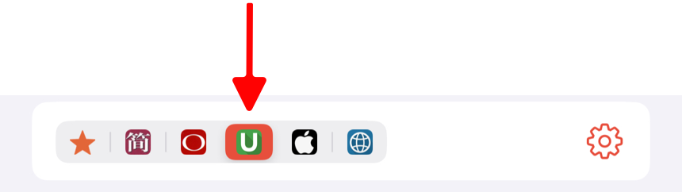
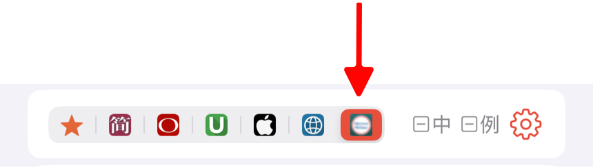

听阅支持导入 MDICT 格式的词典。此外，您还可以从我们提供的网盘下载用户分享的、专为听阅优化的词典。这些词典与听阅内置词典一样，支持选择单词的单个释义进行学习。
导入 MDICT 词典
MDICT 词典通常包含三类文件：mdx、mdd 和 css。您可以通过以下步骤将词典文件导入到听阅中。
-
在电脑上整理词典文件
将所有与待导入的词典相关的文件放入一个文件夹中。建议每个词典单独创建一个文件夹，便于管理。 -
将词典文件同步到设备
-
iPhone/iPad
-
Mac
- 打开「终端」应用。
- 在终端中输入以下命令（请将
xxx替换为你的电脑用户名）打开词典文件所在的目录：
open /Users/xxx/Library/Containers/com.xuehu.words/Data/Documents/dicts
- 将你的词典文件夹拷贝到此目录。
-
-
重启听阅
完成同步后，重启听阅应用，词典将自动加载。 -
词典查词
查词时，在词典详情页，点按菜单栏图标 即可查看导入的词典。
如果菜单栏中没有该图标，请点击右侧的设置按钮，然后在词典设置页面勾选“用户词典”即可。
导入听阅词典
听阅词典是用户分享的、专为听阅优化的词典。这些词典与应用内置词典一样，支持选择单词的单个释义进行学习。您可以通过以下方式从网盘下载并导入到听阅中使用。
在电脑上下载
- 访问百度网盘链接，下载后缀为 ziptd 的词典文件。
- 下载完成后，将文件后缀从 ziptd 改为 zip，然后解压文件。
- 按照导入 MDICT 词典的步骤，将解压后的文件导入到听阅应用中。
- 导入完成后，重启听阅。
在iPhone/iPad上下载
- 通过「百度网盘」应用打开分享链接，下载扩展名为 ziptd 的词典文件。
- 下载完成后，点击文件，选择“用其他应用打开”，然后选择“存储到文件”并保存到听阅目录中。
- 打开「文件」应用，选择“浏览” -> “我的iPhone” -> “听阅”，找到保存的词典文件。长按文件，选择“重新命名”，将后缀名 ziptd 改为 zip。
- 点击 zip 文件进行解压。
- 解压完成后，重启听阅。
导入后，菜单栏将会显示专门的图标来标识该词典。例如，导入“韦氏高阶英汉双解词典.ziptd”后的菜单栏如下：

查词时，只需点击该词典图标即可查看导入的词典。如果菜单栏中没有该图标，请点击右侧的设置按钮，在词典设置页面勾选您导入的词典即可。